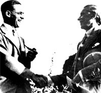

Pakistan Zindabad
Pakistan is Democratic country. Pakistan is rich of mineral and agricultural sources and also Pakistan own biggest river and lake system in the world due to this and American President says Pakistan is "Sparrow of Gold".The Pakistan cricket team also known as The Green Shirts or The Shaheens) is the national cricket team of Pakistan. Represented by the Pakistan Cricket Board (PCB), the team is a full member of the International Cricket Council, and participates in Test, ODI and Twenty20 International cricket matches.
Pakistan have played 874 ODIs, winning 460, losing 388, tying 8 with 18 ending in no-result. Pakistan were the 1992 World Cup champions, and were runners-up in the 1999 tournament. Pakistan, in conjunction with other countries in South Asia, have hosted the 1987 and 1996 World Cups, with the 1996 final being hosted at Gaddafi Stadium in Lahore. The team has also played 110 Twenty20 Internationals, the most of any team, winning 64 losing 43 and tying 3. Pakistan won the 2009 ICC World Twenty20 and were runners-up in the inaugural tournament in 2007.
Pakistan have played 405 Test matches, with winning 130, losing 118 and drawing 158. The team has the third-best win/loss ratio in Test cricket of 1.10, and the fifth-best overall win percentage of 32.01%. Pakistan was given Test status on 28 July 1952, following a recommendation by India, and made its Test debut against India at Feroz Shah Kotla Ground, Delhi, in October 1952, with India winning by an innings and 70 runs. In the 1950s, several Pakistani Test players had played Test cricket for the Indian cricket team before the creation of Pakistan in 1947.
THE PAKISTAN MOMENT

Lahore Resolution
From March 22 to March 24, 1940, the All India Muslim League held its annual session at Minto Park, Lahore. This session e further said, “Mussalmans are a nation according to any definition of nation. We wish our people to develop to the fullest spiritual, cultural, economic, social and political life in a way that we think best and in consonance with our own ideals and according to the genius of our people”.
On the basis of the above proved to be historical. On the first day…

Cripps Mission
The British government wanted to get the cooperation of the Indian people in order to deal with the war situation. The divergence between the twoe further said, “Mussalmans are a nation according to any definition of nation. We wish our people to develop to the fullest spiritual, cultural, economic, social and political life in a way that we think best and in consonance with our own ideals and according to the genius of our people”.
On the basis of the above major representative parties of the…

Gandhi-Jinnah Talks
The Gandhi-Jinnah Talks have eminent significance with regard to the political problems of India and the Pakistan Movement. The talks betweee further said, “Mussalmans are a nation according to any definition of nation. We wish our people to develop to the fullest spiritual, cultural, economic, social and political life in a way that we think best and in consonance with our own ideals and according to the genius of our people”.
On the basis of the above n the two great leaders of the Sub-continent began in…
 >
>
Impact of the Second World War
When the Britain declared war against Germany the Viceroy announced that India was also at war. Indian leaders resented this decision because it was tae further said, “Mussalmans are a nation according to any definition of nation. We wish our people to develop to the fullest spiritual, cultural, economic, social and political life in a way that we think best and in consonance with our own ideals and according to the genius of our people”.
On the basis of the above ken without their consent and formal…

British Offer of August (1940)
On August 8, 1940 the British Government issued a White Paper that after the war a constituent assembly would be formed in India. The August Offer showed a e further said, “Mussalmans are a nation according to any definition of nation. We wish our people to develop to the fullest spiritual, cultural, economic, social and political life in a way that we think best and in consonance with our own ideals and according to the genius of our people”.
On the basis of the above clear change…

Civil Disobedience Movement
On ctober 13, 1940 Gandhi declared his line of action in the Working Committee of Congress. The plan was to start ‘individual satyagrah’ acce further said, “Mussalmans are a nation according to any definition of nation. We wish our people to develop to the fullest spiritual, cultural, economic, social and political life in a way that we think best and in consonance with our own ideals and according to the genius of our people”.
On the basis of the above ording to it few people chosen by…